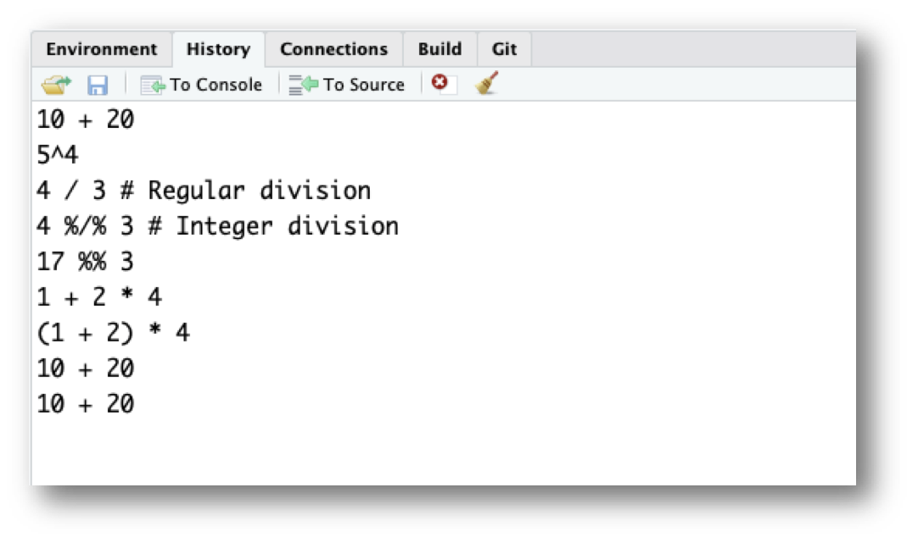

Getting Started
1 R and RStudio
1.1 What’s the difference?
R is a programming language that runs computations while RStudio is an integrated development environment (IDE) - an interface for working in R with many convenient features and tools.
You can think of the two like this:
- R is like a car’s engine.
- RStudio is like a car’s dashboard.
| R: Engine | RStudio: Dashboard |
|---|---|
 |
 |
Your car needs an engine (R) to run, but having a speedometer and rear view mirrors (RStudio) makes driving a lot easier.
1.2 Installing R and RStudio
You will first need to download and install both R and RStudio (Desktop version) on your computer.
1.3 Using R via RStudio
After you install R and RStudio on your computer, you’ll have two new applications you can open. We will always work in RStudio. In other words:
| R: Do not open this | RStudio: Open this |
|---|---|
 |
 |
After you open RStudio, you should see the following:

Notice the default panes:
- Console (entire left)
- Environment/History (tabbed in upper right)
- Files/Plots/Packages/Help (tabbed in lower right)
FYI: you can change the default location of the panes, among many other things: Customizing RStudio.
Go into the Console on the left with the > (that’s the command prompt), and let’s get started!
2 R as a calculator
2.1 Operators
R handles the four basic arithmetic operators using these symbols:
- Addition:
+ - Subtraction:
- - Multiplication:
* - Division:
/
For example, try typing 30, then hit enter. You should see this:
10 + 20## [1] 30Not a lot of surprises (for now, ignore the [1] you see…we’ll get to that).
R also supports three other useful arithmetic operators:
- Powers:
^ - Integer division:
%/% - Modulus:
%%
Powers (i.e. \(x\) raised to the power of \(n\)) are represented using the ^ symbol. For example, to calculate \(5^4\) in R, we would type:
5^4## [1] 625Integer division is division in which the fractional part (remainder) is discarded. Note the difference between regular (/) and integer (%/%) division:
4 / 3 # Regular division## [1] 1.3333334 %/% 3 # Integer division## [1] 1With integer division, 3 can only go into 4 once, so 4 %/% 3 returns 1.
Finally, the modulus (aka “mod” operator) simply returns the remainder after doing regular division. For example:
17 %% 3## [1] 2returns 2 because because 17 / 3 is equal to 5 with a remainder of 2.
2.2 Order of operations
R follows the typical BEDMAS order of operations. That is, you first calculate things inside Brackets, then calculate Exponents, then Division and Multiplication, then Addition and Subtraction. For a more precise statement, see the operator precedence for R. For example, if I type:
1 + 2 * 4## [1] 9R first computes 2 * 4 and then adds 1. If what you actually wanted was for R to first add 2 to 1, then you should have added parentheses around 1 and 2:
(1 + 2) * 4## [1] 12A helpful rule of thumb to remember is that brackets always come first. So, if you’re ever unsure about what order R will do things in, an easy solution is to enclose the thing you want it to do first in brackets.
2.3 R ignores excess spacing
When I typed 10 + 20 before, I could equally have done this
10 + 20## [1] 30or this
10 + 20## [1] 30and get exactly the same answer.
2.4 Using comments
In R, the # symbol is a special symbol that denotes a comment. R will ignore anything on the same line that follows the # symbol. This enables us to write comments around our code to explain what we’re doing:
2 + 2 # This is a comment explaining that I'm adding two numbers## [1] 4Notice that R ignores the whole sentence after the # symbol.
3 Staying organized
3.1 The history pane
R keeps track of your “command history”. If you hit the up key, the R console will show you the most recent command that you’ve typed. Hit it again, and it will show you the command before that.
The second way to get access to your command history is to look at the history panel in Rstudio. On the upper right hand side of the Rstudio window you’ll see a tab labelled “History”. Click on that, and you’ll see a list of all your recent commands displayed in that panel. It should look something like this:

If you double click on one of the commands, it will be copied to the R console.
3.2 Working directory
Any process running on your computer has a notion of its “working directory”. In R, this is where R will look for files you ask it to load. It’s also where any files you write to disk will go.
You can explicitly check your working directory with:
getwd()It is also displayed at the top of the RStudio console.
As a beginning R user, it’s OK let your home directory or any other weird directory on your computer be R’s working directory. Very soon, I urge you to evolve to the next level, where you organize your analytical projects into directories and, when working on project A, set R’s working directory to the associated directory.
Although I do not recommend it, in case you’re curious, you can set R’s working directory at the command line like so:
setwd("~/myCoolProject")Although I do not recommend it, you can also use RStudio’s Files pane to navigate to a directory and then set it as working directory from the menu:
Session –> Set Working Directory –> To Files Pane Location.
You’ll see even more options there). Or within the Files pane, choose More and Set As Working Directory.
But there’s a better way. A way that also puts you on the path to managing your R work like an expert.
3.3 RStudio projects
Keeping all the files associated with a project organized together – input data, R scripts, analytical results, figures – is such a wise and common practice that RStudio has built-in support for this via its projects.
Let’s make one for practice. Do this:
File > New Project ….
You should see the following pane:

Choose “New Directory”. The directory name you choose here will be the project name. Call it whatever you want. RStudio will create a folder with that name to put all your project files.
As a demo, I created a project on my Desktop called “demo”. RStudio created a new project called “demo”, and in this folder there is a file called “demo.Rproj”. If I double-click on this file, RStudio will open up, and my working directory will be automatically set to this folder! You can double check this by typing:
getwd()3.4 Saving your code in .R Files
It is traditional to save R scripts with a .R or .r suffix. Any code you wish to re-run again later should be saved in this way and stored within your project folder. For example, if you wanted to re-run all of the code in this tutorial, open a new .R file and save it to your R project folder. Do this:
File > New File > R Script
Copy-paste all of the code we’ve typed so far into this file:
10 + 20
5^4
4 / 3 # Regular division
4 %/% 3 # Integer division
17 %% 3
1 + 2 * 4
(1 + 2) * 4
10 + 20
10 + 20
2 + 2 # This is a comment explaining that I'm adding two numbers
getwd()Then save this new R script with some name. Do this:
File > Save
I called the file “tutorial.R” and saved it in my R project folder called “demo”.
Now when I open the “demo.Rproj” file, I see in my files pane the “tutorial.R” code script. I can click on that file and continue editing it!
I can also run any line in the script by typing “Command + Enter” (Mac) or “Control + Enter” (Windows).
This work is licensed under a Creative Commons Attribution 4.0 International License. See the licensing page for more details about copyright information.